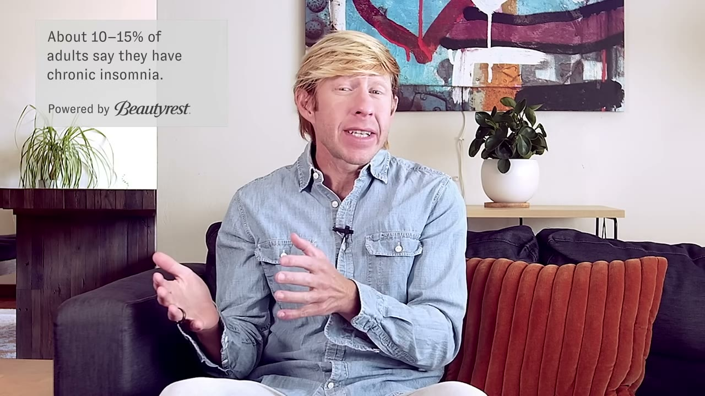
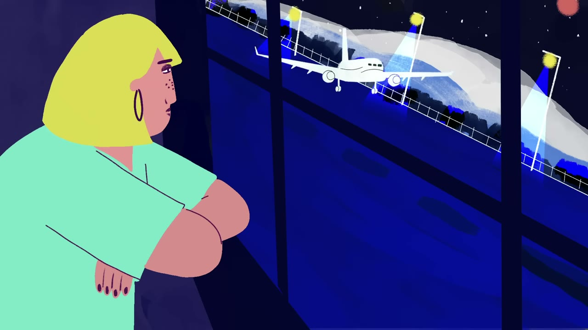

Six sleep tips, and the boundary where advice stops working
Text breakdown · 1 · generated 2026-10-02 00:06
📄 All videos🎧 Audio breakdown📝 Notes for this one✍️ Practice for this one
Chapters（8）
1. Outline
Starting point · Matt Walker takes the one thing the audience already accepts — a bad night is normal — and turns it into a question about levers, then spends six tips moving inward from the body clock to the room to what you do once you are in bed, before drawing the line where none of it applies.
- A bad night is normal — but fixable0:00
- Tip 1: regularity, weekends included0:21
- Tip 2: keep it cool1:04
- Tip 3: darkness, starting in the evening1:44
- Tip 4: walk it out2:28
- Tip 5: alcohol and caffeine3:21
- Tip 6: sleep is a landing, not a switch3:39
- These tips do not treat a disorder4:33
2. The YouTuber's line of reasoning
6 tips for better sleep | Sleeping with Science, a TED series
TED · 5m29s · subtitles en · vision=on （Animated voice-over: the illustrations carry the two numbers the narration states (the 1 °C / 65 °F bedroom target and the 25-minute rule) plus the plane-landing metaphor, so reading the frames confirms whether the visuals add anything the words leave out.） · YouTube
Estimated vs actual time
| Stage | Estimated | Actual |
|---|---|---|
| fetch | – | 3s |
| segment | – | – |
| shot | – | 1s |
| analyze | – | 7m00s |
| render | – | – |
Matt Walker starts from something the audience already believes about itself — that a bad night happens to everyone and is nothing to worry about — and uses that concession to swap the question.The issue is not whether you slept badly last night;it is how you raise both the quantity and the quality of sleep over time.
From there he refuses the usual format of a sleep-hygiene list, where six rules arrive as six arbitrary commands.Each tip is attached to a mechanism that makes it follow: regularity works because there is a master 24-hour clock that expects it;cool works because the body must shed about a degree of core temperature to fall and stay asleep;
dark works because darkness in the evening is what releases melatonin;getting out of bed works because the brain is an associative device that has learned to pair the bed with being awake;the wind-down routine works because sleep onset is a descent, not a switch.
The ordering is deliberate too: he moves from the slowest, most internal variable — the clock that runs whether you cooperate or not — outward through the room you sleep in, then into the night itself when the room is right and sleep still will not come, and finally into the last hour before bed, the only stretch most people actually control.He ends by fencing the whole list in.Everything he has said is performance advice for a system that works;
if the system is broken — insomnia, sleep apnea — the advice does not apply, and the closing image of sleep as a life-support system is the reason he thinks getting it right is worth the trouble.
Reasoning chain: what each segment leaves for the next
Each row is a segment; the text after the arrow is the thread it leaves for the next one. Click a title to jump to that segment.
- A bad night is normal — but fixable → Six tips are promised but not ranked, which leaves an obvious question hanging: which one comes first, and on what grounds? The answer sets up the next segment — the first tip is the one that governs the conditions all the others operate in.
- Tip 1: regularity, weekends included → The clock is internal, but it does not run in isolation — it reads signals from the body and the room. That raises the next question: which signals? The first one the talk takes up is not a signal the environment sends in, but a change the body itself has to make.
- Tip 2: keep it cool → Temperature is one input the clock and body read, and it is a slow one. The more decisive signal — the one that tells the clock what time of day it actually is — has not been named yet, and it is the subject of the next tip.
- Tip 3: darkness, starting in the evening → The room has now been specified: cool, and dark from the evening onward. But a correctly set room is not a guarantee, and the obvious next case is the one everyone has lived through — the conditions are right, the lights are off, and sleep still does not come.
- Tip 4: walk it out → The bed has now been defended against wakefulness at night. What has not been examined is what was swallowed hours earlier — the two everyday substances that can guarantee a bad night before the bedroom is even entered.
- Tip 5: alcohol and caffeine → Both substances work by interfering with the passage into sleep — one by hiding the pressure to sleep, the other by faking the arrival. That raises the question the final tip answers: what is that passage supposed to look like when nothing is interfering with it?
- Tip 6: sleep is a landing, not a switch → Every tip so far has assumed a system that works and merely needs better conditions. That assumption has never been stated, and the closing segment is where Walker finally states it — along with what happens when it is false.
- These tips do not treat a disorder
3. Segment by segment
6 tips for better sleep | Sleeping with Science, a TED series
1. A bad night is normal — but fixable 0:00–0:21
Matt Walker opens by granting that everyone sleeps badly sometimes and that this is perfectly normal, then reframes the question: how do you improve both the quantity and the quality of sleep? He promises six scientifically grounded tips.
ReasoningBecause the audience is likely to read bad sleep as a personal failing, Walker first grants that it is perfectly normal — which costs him nothing and buys the listener's attention — and then immediately replaces the question. Not 'why did I sleep badly', but 'how could we try to improve both the quantity and the quality of our sleep'. That reframing is what makes six tips possible: if bad sleep were a verdict there would be nothing to do, but if sleep is a system with inputs, there are inputs to change.
AI noteWorth slowing down on the pair of words he uses once and never defines: quantity and quality. Quantity is hours in bed asleep. Quality is a different axis — how continuous the night is, how much of it reaches the deep and REM stages, how little of it is spent in micro-awakenings you never remember. They can move independently, and that is why the talk needs six tips rather than one: some of what follows buys hours, some buys depth, and a habit can protect one while quietly destroying the other. His other framing word is 'scientifically grounded', which is a claim about where the tips come from, not a claim that they work for everyone — a limit he keeps in reserve.
Terms:sleep qualitysleep hygiene
2. Tip 1: regularity, weekends included 0:21–1:04
Go to bed and wake up at the same time. Regularity is king: it anchors sleep and lifts both quantity and quality regardless of weekday, weekend, or a bad night before. The mechanism is a master 24-hour clock deep in the brain that expects regularity and works best under it. He notes we all set a wake-up alarm but almost nobody sets a to-bed alarm.
ReasoningBecause success has just been defined on two axes, Walker opens with the tip that scores on both, and he states it as a near-absolute: regularity is king, no matter whether it is a weekday or the weekend, and even after a bad night. Then, rather than leaving it as a rule to obey, he gives the reason underneath it — deep in the brain there is a master 24-hour clock that expects regularity and works best under it. Once the habit has a mechanism, the weekend clause stops sounding like puritanism and starts sounding like an engineering constraint. He closes on the asymmetry nobody notices: we all set an alarm to end sleep, hardly anyone sets one to start it.
- CA master 24-hour clock in the brain expects regularity.→ Map
- PFix one bed time and one wake time, and defend them on weekends too.→ Practice
- PSet a to-bed alarm, the half of the alarm nobody sets.→ Practice
- RAlmost everyone sets a wake-up alarm; almost nobody sets a to-bed alarm.→ Store + recall
AI noteThe clause doing the most work is the one easiest to skip: keep the schedule even if you slept badly. That runs against the intuition to repay a deficit by sleeping in, and the reason is that the clock is set mainly by when you wake and what light you see afterwards. Sleeping two hours late on Sunday shifts the pacemaker later, so Sunday night's sleep arrives late and Monday is spent recovering from a jet lag you created without travelling. The to-bed alarm is the practical counterpart. The reason most people's bedtime drifts is not that they chose it; bedtime is whatever is left over after the day finishes, so it is the only part of the schedule with no one defending it. An alarm turns it back into an appointment.
Terms:circadian rhythm
3. Tip 2: keep it cool 1:04–1:44
Brain and body must drop their core temperature by about 1 °C (2–3 °F) to start and stay asleep, which is why a room that is too cold is easier to fall asleep in than one that is too hot. The current recommendation is a bedroom around 65 °F, a little over 18 °C.

ReasoningBecause the last segment established that sleep is timed by a mechanism rather than willed, Walker now gives that mechanism a physical variable to move. Brain and body must drop core temperature by about one degree Celsius — two to three Fahrenheit — to initiate sleep and then to stay asleep. From that single fact he derives two things in a row. First, an everyday observation that suddenly makes sense: a room that is too cold is easier to fall asleep in than one that is too hot, because the cold room is doing the work for you. Second, an actual number — about 65 degrees Fahrenheit, a little over 18 Celsius — and he pre-empts the objection by admitting it sounds cold.
- CSleep starts only after core body temperature drops about 1 °C.→ Map
- ECore temperature has to fall about 1 °C (2–3 °F) to start and to stay asleep.→ Store + rehearse
- EThe recommended bedroom is around 65 °F, a little over 18 °C.→ Store + rehearse
- PLower the bedroom instead of adding blankets.→ Practice
AI noteThe direction of the change is the whole point, and it is where the common objection comes from: if cooling is required, why does a hot bath before bed help? Because the bath cools you. Warm water dilates the blood vessels in the skin, the body dumps heat through the surface, and core temperature falls faster afterwards than it would have on its own. Core and skin move in opposite directions, and only the core number is the one sleep depends on. The second thing worth adding is that 65°F is a population recommendation, not a personal law — it is a starting point to adjust from, and the bedding you sleep under changes what the room number has to be. The illustration at this point is not a thermometer, as a diagram-minded viewer might expect: it shows someone throwing the bedroom window wide open onto a cold night sky over the city. That turns the number into an action and quietly picks the cheapest version of it — ventilation rather than air conditioning.
Terms:core body temperaturethermoregulationsleep onset
4. Tip 3: darkness, starting in the evening 1:44–2:28
We are a dark-deprived society, and darkness specifically in the evening is what triggers melatonin, the hormone that regulates sleep timing. In the last hour before bed, stay away from screens and dim half the lights in the house; eye masks or blackout shades help.
ReasoningBecause the clock needs an external signal to stay aligned, Walker names the one it is built to read, and he states the problem as a shortage rather than an excess: we are a dark-deprived society. Then he narrows it to the hour that matters — darkness specifically in the evening — because that is what triggers the release of melatonin, the hormone that regulates the healthy timing of sleep. Only after the mechanism does he give instructions, and the instructions are concrete and cheap: in the last hour before bed, stay away from computer screens, tablets and phones; dim down half the lights in the house; use an eye mask or blackout shades if you like.
- CEvening darkness releases melatonin, which schedules sleep.→ Map
- AMelatonin is a starting gun, not the race — it says when, not how.→ Critique
- PDim the house in the last hour, not just the phone.→ Practice
- EWalker ranks screens above room lighting; lux usually reverses it.→ Store + rehearse
AI noteThe most consequential thing to add is what melatonin is not. It is a timing signal, not a sedative — it announces biological night and lets the rest of the system act on that announcement; it does not switch consciousness off. That is why people who take a supplement and feel nothing conclude it 'does not work', and why the dose that matters most is the one your own eyes trigger by sitting in dim light. The second addition concerns the ordering of his two instructions, which does not match the size of their effects. Note also that he gives the lighting advice a hedge he gives nothing else — 'half the lights' — while the screen advice is unqualified, which is the opposite of what the exposure numbers suggest.
Terms:lux
「In the last hour before bed, try to stay away from all of those computer screens and tablets and phones.」
5. Tip 4: walk it out 2:28–3:21
Do not lie awake in bed. The rule of thumb is 25 minutes — if you cannot fall asleep or cannot get back to sleep after that, get out of bed and do something else. The reason is associative learning: the brain has learned that bed triggers wakefulness, and that association has to be broken. Return only when sleepy, so the bed becomes a place of consistent sleep.

ReasoningBecause the environmental tips cannot promise results, Walker needs a rule for the night when they do not work, and his rule is counterintuitive: do not stay in bed awake for long periods. The rule of thumb is twenty-five minutes, whether you are trying to fall asleep for the first time or have woken and cannot get back. Then comes the reason, and it is the only place in the talk where the mechanism is psychological rather than bodily: the brain is an incredibly associative device, it has learned that the bed is a trigger of wakefulness, and that association has to be broken. The instruction follows directly from the mechanism — get up, do something else, return only when sleepy — and so does the goal, which is not tonight's sleep but a relearned association in which the bed means consistent sleep.
- CThe brain is associative: a bed you lie awake in comes to mean wakefulness.→ Map
- PLeave the bed when sleep will not come, and come back only when sleepy.→ Practice
- AWalker's own framing: the bed is a trigger the brain has been trained on.→ Critique
- EThe talk says 25 minutes; clinical manuals usually say 15–20.→ Store + rehearse
AI noteWhat Walker leaves implicit is that this is the core of the most effective non-drug treatment for insomnia, where it is called stimulus control: the bed is reserved for sleep so that it keeps its meaning, and lying awake in it is treated as actively harmful because every such hour trains the opposite lesson. That also resolves the obvious objection to the number. If the brain is learning associations, then checking a clock to measure twenty-five minutes is itself a wakeful, arousing act — the figure is meant to be estimated from how it feels, never timed, and clock-watching is one of the first habits a clinician removes. The frame at this point is worth describing because it is not what the words set up: there is no clock graphic, just Walker on a couch, with a caption reading 'About 10–15% of adults say they have chronic insomnia' and a sponsor credit, 'Powered by Beautyrest'. The caption supplies a figure the narration never mentions, and the credit is useful context — this is a sleep series funded by a mattress company, which is worth knowing even when, as here, the advice costs nothing and sells nothing.
「and it's been 25 minutes or so」
6. Tip 5: alcohol and caffeine 3:21–3:39
He points back to an earlier episode in the series rather than re-explaining, and compresses it to a rule of thumb: no caffeine in the afternoon or evening, and do not go to bed tipsy.
ReasoningBecause the series has already covered alcohol and caffeine in detail, Walker makes a deliberate choice not to re-explain them, and the segment becomes the shortest in the talk — a pointer plus a rule of thumb. Stay away from caffeine in the afternoon and in the evening, and do not go to bed too tipsy. The compression is defensible as structure, since re-teaching two pharmacology stories here would break the rhythm of a six-tip list, but it does mean this tip arrives without the mechanism that makes every other tip persuasive.
- CAlcohol and caffeine both attack the passage into sleep, from opposite ends.→ Map
- PCut the caffeine deadline, and stop treating a nightcap as help.→ Practice
- RSedation is not sleep — alcohol produces the first and costs you the second.→ Store + recall
AI noteSo the mechanism is worth supplying. Caffeine works by blocking adenosine, the molecule that accumulates through the day and creates the pressure to sleep; it does not remove the pressure, it hides it, and when the drug clears the accumulated pressure is still there. Its half-life is roughly five to six hours in a typical adult, which is why an afternoon coffee still has a meaningful fraction circulating at midnight, and why people who insist caffeine does not affect them are often right about falling asleep and wrong about the night that follows — the damage shows up in depth, not in onset. Alcohol is the mirror image: it is a sedative, and sedation is not sleep. It shortens the time to lose consciousness, then fragments the night with awakenings too brief to remember and suppresses REM sleep, so the hours survive while the structure inside them does not. This is the one tip that most clearly separates the two axes the talk opened with — both substances can leave the quantity looking fine while the quality is gone.
7. Tip 6: sleep is a landing, not a switch 3:39–4:33
Modern expectation is that sleep works like a light switch. Physiologically it is closer to landing a plane: the brain needs time to descend onto the bedrock of good sleep. So in the last 20–60 minutes before bed, disengage from screens, do something relaxing, and once you find what works, keep to that routine.

ReasoningBecause every earlier tip has assumed that sleep onset takes time without ever saying so, Walker now names the false model people are carrying. We expect to dive into bed, switch off the light, and find that sleep is also just like a light switch — immediate and on demand. He replaces that model with a better one: sleep as a physiological process is much more similar to landing a plane, where it takes time for the brain to gradually descend onto the firm bedrock of good sleep. The wind-down routine is then a direct consequence rather than a separate rule. If sleep needs a descent, the descent needs airspace, so the last twenty minutes, half an hour, even the last hour go to disengaging from the computer and phone and doing something relaxing — and because the point is the descent rather than any particular activity, his final instruction is to find what works for you and stick to it.
- CSleep onset is a descent that takes time, not a switch you flip.→ Map
- AThe talk's best image: falling asleep is landing a plane, not flipping a switch.→ Critique
- PBuild one wind-down routine and then stop redesigning it.→ Practice
AI noteThe metaphor earns its place because of a structural difference, not because it is vivid. A switch has two states and no interval between them, so under that model failing to sleep instantly is a malfunction. A landing has an approach, so most 'I cannot fall asleep' complaints turn out to be approaches begun at the runway. It also reframes the twenty-to-sixty-minute bracket correctly: that is a window to descend through, not a dose to take, which is why the exact activity matters far less than its reliability. Where the metaphor misleads is worth saying too — a pilot executes a landing on a schedule, whereas sleep onset is permissive. You can only arrange the conditions and then stop interfering; trying harder to sleep is self-defeating in a way that trying harder to land is not. The illustration catches this almost by accident: instead of a cockpit, the frame shows a woman standing at a terminal window at night, arms folded, watching a plane touch down on a lit runway. She is a spectator, not the pilot — which is exactly the right posture for the last hour before bed.
Terms:sleep latency
8. These tips do not treat a disorder 4:33–5:29
He draws a boundary: if you have insomnia or sleep apnea, these tips will not necessarily help. The sports-coach analogy — advice cannot fix a broken ankle, you treat the ankle first. See a doctor. He closes by calling sleep a life-support system, and perhaps a superpower.
ReasoningBecause he has just finished a list that sounds comprehensive, Walker's final move is to limit it rather than extend it: if you are suffering from a sleep disorder, insomnia or sleep apnea for example, these tips are not necessarily going to help. The sports-coach analogy makes the limit precise — a coach can hand over every technique for improving performance, but with a broken ankle none of it makes a difference, and the ankle gets treated first. So the advice is to see a doctor, which he calls the best piece of advice in the talk. Having fenced the list in, he can state the stake without overclaiming: sleep is close to a life-support system, and some may even call it a superpower.
- CSleep hygiene optimises a working system; a disorder needs treatment.→ Map
- AWalker's boundary: coaching cannot fix a broken ankle.→ Critique
- RInsomnia and sleep apnea are the two disorders Walker names as out of scope.→ Store + recall
AI noteThe two disorders he names fail in different ways, and the difference is useful. Sleep apnea is a mechanical breathing problem — the airway collapses repeatedly during the night and the brain surfaces each time to reopen it — so no amount of cool, dark or regularity touches the cause, and daytime exhaustion despite a full night in bed is the signal to get assessed. Insomnia is a disorder of the sleep process itself, and the relationship to the tips is more awkward than the analogy suggests: the leaving-the-bed tip is genuinely a piece of the standard treatment, but a piece delivered without the rest of the protocol, which also includes restricting time in bed and working on the beliefs that drive the arousal. Handing someone with insomnia a hygiene list is a known failure mode, because it reads as a list of things they are already doing and still failing at. On the closing line, 'life-support system' is doing honest work — sleep is implicated in immune function, memory consolidation, metabolic regulation and emotional control — while 'superpower' is rhetoric, and the better reading is that sleep is not an advantage but a baseline whose absence is the deficit.
Terms:CBT-I
4. Summary
The talk is built as a single narrowing path rather than a list. It opens by granting that a bad night is normal, which buys permission to ask what can actually be controlled. Tip one places the control inside the body: a master 24-hour clock that expects regularity, which is why weekends count and why a to-bed alarm is the missing half of the alarm we all already set. Tips two and three then supply what that clock reads from outside — a core temperature that must fall about 1 °C, and darkness in the evening that releases melatonin. Having specified the room, Walker concedes a correctly set room still does not guarantee sleep, and tip four moves to behaviour: the brain is an associative device, so lying awake teaches the bed to mean wakefulness, and the fix is to leave. Tip five removes what was swallowed earlier in the day, and tip six replaces the mental model entirely — sleep is not a light switch but a plane landing, which is what makes a wind-down routine a requirement rather than a nicety. The final move is the one that gives the rest its credibility: if the system is broken, insomnia or apnea, none of this is treatment. A coach cannot fix a broken ankle. See a doctor first.
Corrections at a glance
Wrong / outdatedDebatable (depends on version or context)
| Segment | Verbatim quote (from transcript) | Note |
|---|---|---|
| 4. Tip 3: darkness, starting in the evening 2:02 |
「In the last hour before bed, try to stay away from all of those computer screens and tablets and phones.」 | The advice is sound, but the ranking is questionable. Screens are named first and without qualification, while ordinary room lighting comes second and is softened to 'half the lights' — whereas for most households the ceiling fixture is the larger source of light at the eye. A phone held at arm's length delivers on the order of 10–40 lux to the retina; an overhead fixture in a normally lit living room delivers roughly 100–300 lux across the whole visual field, and that is the exposure shown to suppress melatonin and delay its onset. Screens still matter, partly through light and partly through what is on them, but a listener who gives up the phone and keeps the overhead lights on all evening has fixed the smaller half of the problem. Evidence: Gooley et al., 'Exposure to Room Light before Bedtime Suppresses Melatonin Onset', J Clin Endocrinol Metab 96(3), 2011, found ordinary room light shortened melatonin duration and suppressed its onset in the majority of participants; subsequent reviews of evening screen use report real but comparatively modest melatonin effects. |
| 5. Tip 4: walk it out 2:39 |
「and it's been 25 minutes or so」 | Most clinical sources put the threshold lower. Stimulus-control instructions are usually written as 'if you are not asleep within about 15 to 20 minutes, get out of bed', and patient handouts repeat that range rather than 25 minutes. The gap is small and arguably harmless — Walker immediately qualifies it with 'or so', and the figure is supposed to be a felt estimate rather than a timed one, since looking at a clock to check is itself the kind of alerting behaviour the tip is trying to eliminate. But a listener who takes 25 as the standard will lie awake longer than the protocol intends, which is the direction that reinforces exactly the association being broken. Evidence: Bootzin's stimulus-control instructions, the source of this tip, and American Academy of Sleep Medicine patient materials on insomnia both use a 15–20 minute threshold. |
5. Three recommended next steps
1. Go deeper: how the master clock actually keeps time
The talk names a 24-hour clock deep in the brain and leaves it as a black box. Knowing that it sits in the suprachiasmatic nucleus and is reset mainly by morning light turns tip one from a rule into something you can debug when your schedule slips.
Search YouTube: suprachiasmatic nucleus circadian rhythm explained how light resets the body clock circadian rhythm morning light exposure
2. Compare: what sleep is doing while you are in it
Every tip here optimises the conditions for sleep without saying what the sleep is for. Walker's own work on memory consolidation and emotional processing during REM and deep sleep is the other half, and it is what makes the quality half of 'quantity and quality' concrete.
Search YouTube: Matt Walker why we sleep REM deep sleep sleep memory consolidation explained what happens during deep sleep stages
3. Apply: the treatment the talk explicitly excludes
The closing boundary — these tips will not help insomnia — points at a specific named treatment rather than a void. CBT-I is the first-line recommendation, and tip four's get-out-of-bed rule is a single borrowed piece of it, so seeing the full protocol shows what the talk left out.
Search YouTube: CBT-I cognitive behavioral therapy for insomnia stimulus control therapy insomnia sleep restriction therapy explained